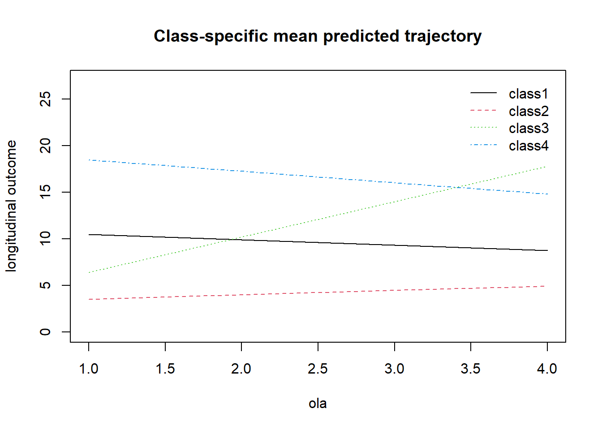
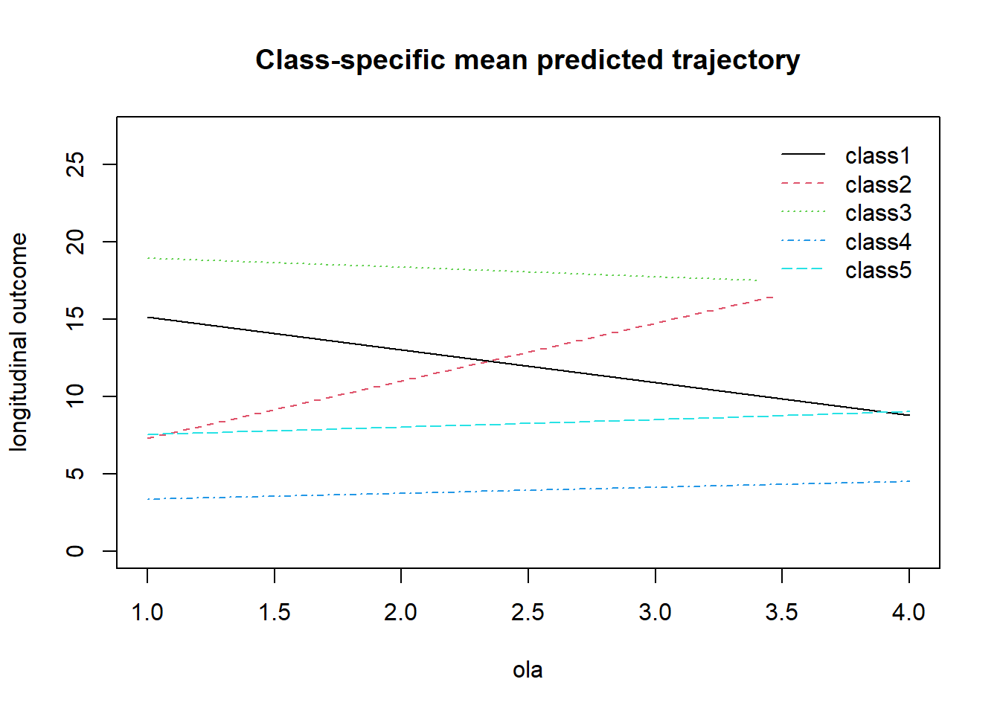

Capítulo 2 Trayectorias de sintomatologia depresiva. Modelo Latent Class Mixed Model (LCMM)
set.seed(123)2.1 Identificar trayectorias:
Modelos de trayectorias lineales:
Se usa el modelo de 1 clase para fijar los valores iniciales a iterar:
lcmm1_lin <- hlme(phq9 ~ ola, subject = "idencuesta", ng = 1,
data = elsoc_salud_long)
lcmm2_lin <- gridsearch(rep = 10, maxiter = 10, minit = lcmm1_lin,
hlme(phq9 ~ ola, mixture = ~ ola, subject = "idencuesta", ng = 2,
data = elsoc_salud_long))
lcmm3_lin <- gridsearch(rep = 10, maxiter = 10, minit = lcmm1_lin,
hlme(phq9 ~ ola, mixture = ~ ola, subject = "idencuesta", ng = 3,
data = elsoc_salud_long))
lcmm4_lin <- gridsearch(rep = 10, maxiter = 10, minit = lcmm1_lin,
hlme(phq9 ~ ola, mixture = ~ ola, subject = "idencuesta", ng = 4,
data = elsoc_salud_long))
lcmm5_lin <- gridsearch(rep = 10, maxiter = 10, minit = lcmm1_lin,
hlme(phq9 ~ ola, mixture = ~ ola, subject = "idencuesta", ng = 5,
data = elsoc_salud_long))
lcmm6_lin <- gridsearch(rep = 10, maxiter = 10, minit = lcmm1_lin,
hlme(phq9 ~ ola, mixture = ~ ola, subject = "idencuesta", ng = 6,
data = elsoc_salud_long))Comparación resultados
# Comparar resultados:
resultados_comparados <- summarytable(lcmm1_lin,
lcmm2_lin,
lcmm3_lin,
lcmm4_lin,
lcmm5_lin,
lcmm6_lin)kableExtra::kbl(resultados_comparados[,1:4],
digits = 1)| G | loglik | npm | BIC | |
|---|---|---|---|---|
| lcmm1_lin | 1 | -23481.3 | 3 | 46985.3 |
| lcmm2_lin | 2 | -22741.5 | 6 | 45528.4 |
| lcmm3_lin | 3 | -22642.0 | 9 | 45352.1 |
| lcmm4_lin | 4 | -22555.4 | 12 | 45201.5 |
| lcmm5_lin | 5 | -22530.1 | 15 | 45173.5 |
| lcmm6_lin | 6 | -22530.1 | 18 | 45196.2 |
kableExtra::kbl(resultados_comparados[,5:9],
digits = 1)| %class1 | %class2 | %class3 | %class4 | %class5 | |
|---|---|---|---|---|---|
| lcmm1_lin | 100.0 | NA | NA | NA | NA |
| lcmm2_lin | 19.6 | 80.4 | NA | NA | NA |
| lcmm3_lin | 71.6 | 4.3 | 24.1 | NA | NA |
| lcmm4_lin | 20.5 | 5.1 | 70.4 | 4.0 | NA |
| lcmm5_lin | 2.5 | 65.0 | 4.2 | 21.6 | 6.7 |
| lcmm6_lin | 27.3 | 6.7 | 2.5 | 59.2 | 0.0 |
2.2 Principales trayectorias
Según criterios de información debería estar entre 4 y 5 clases:
summary(lcmm4_lin)## Heterogenous linear mixed model
## fitted by maximum likelihood method
##
## hlme(fixed = phq9 ~ ola, mixture = ~ola, subject = "idencuesta",
## ng = 4, data = elsoc_salud_long)
##
## Statistical Model:
## Dataset: elsoc_salud_long
## Number of subjects: 1913
## Number of observations: 7518
## Number of latent classes: 4
## Number of parameters: 12
##
## Iteration process:
## Convergence criteria satisfied
## Number of iterations: 12
## Convergence criteria: parameters= 5.9e-05
## : likelihood= 5.5e-05
## : second derivatives= 4.8e-10
##
## Goodness-of-fit statistics:
## maximum log-likelihood: -22555.4
## AIC: 45134.8
## BIC: 45201.47
##
##
## Maximum Likelihood Estimates:
##
## Fixed effects in the class-membership model:
## (the class of reference is the last class)
##
## coef Se Wald p-value
## intercept class1 1.60697 0.17349 9.263 0.00000
## intercept class2 0.23971 0.26128 0.917 0.35891
## intercept class3 2.76869 0.17480 15.840 0.00000
##
## Fixed effects in the longitudinal model:
##
## coef Se Wald p-value
## intercept class1 11.03686 0.60059 18.377 0.00000
## intercept class2 2.61050 0.81625 3.198 0.00138
## intercept class3 3.05637 0.17040 17.937 0.00000
## intercept class4 19.70160 0.78637 25.054 0.00000
## ola class1 -0.56536 0.18648 -3.032 0.00243
## ola class2 3.79454 0.32965 11.511 0.00000
## ola class3 0.46852 0.05640 8.307 0.00000
## ola class4 -1.22304 0.28501 -4.291 0.00002
##
## coef Se
## Residual standard error: 4.15204 0.03821pred_lcmm4_lin <- predictY(lcmm4_lin, data.frame(ola = 1:4))
plot(pred_lcmm4_lin, ylim = c(0, 27))
summary(lcmm5_lin)## Heterogenous linear mixed model
## fitted by maximum likelihood method
##
## hlme(fixed = phq9 ~ ola, mixture = ~ola, subject = "idencuesta",
## ng = 5, data = elsoc_salud_long)
##
## Statistical Model:
## Dataset: elsoc_salud_long
## Number of subjects: 1913
## Number of observations: 7518
## Number of latent classes: 5
## Number of parameters: 15
##
## Iteration process:
## Convergence criteria satisfied
## Number of iterations: 21
## Convergence criteria: parameters= 4.9e-07
## : likelihood= 2.8e-07
## : second derivatives= 1e-13
##
## Goodness-of-fit statistics:
## maximum log-likelihood: -22530.07
## AIC: 45090.14
## BIC: 45173.49
##
##
## Maximum Likelihood Estimates:
##
## Fixed effects in the class-membership model:
## (the class of reference is the last class)
##
## coef Se Wald p-value
## intercept class1 -1.09528 0.29176 -3.754 0.00017
## intercept class2 2.10611 0.24776 8.501 0.00000
## intercept class3 -0.46935 0.31841 -1.474 0.14048
## intercept class4 1.13362 0.27766 4.083 0.00004
##
## Fixed effects in the longitudinal model:
##
## coef Se Wald p-value
## intercept class1 19.54452 1.02554 19.058 0.00000
## intercept class2 2.99013 0.19370 15.437 0.00000
## intercept class3 3.60755 0.92284 3.909 0.00009
## intercept class4 7.05191 0.92077 7.659 0.00000
## intercept class5 17.29622 1.14397 15.120 0.00000
## ola class1 -0.59844 0.39142 -1.529 0.12629
## ola class2 0.39012 0.06900 5.654 0.00000
## ola class3 3.71429 0.33535 11.076 0.00000
## ola class4 0.49308 0.29471 1.673 0.09431
## ola class5 -2.12546 0.30100 -7.061 0.00000
##
## coef Se
## Residual standard error: 4.08242 0.03854pred_lcmm5_lin <- predictY(lcmm5_lin, data.frame(ola = 1:4))
plot(pred_lcmm5_lin, ylim = c(0, 27))
summary(lcmm6_lin)## Heterogenous linear mixed model
## fitted by maximum likelihood method
##
## hlme(fixed = phq9 ~ ola, mixture = ~ola, subject = "idencuesta",
## ng = 6, data = elsoc_salud_long)
##
## Statistical Model:
## Dataset: elsoc_salud_long
## Number of subjects: 1913
## Number of observations: 7518
## Number of latent classes: 6
## Number of parameters: 18
##
## Iteration process:
## Convergence criteria satisfied
## Number of iterations: 23
## Convergence criteria: parameters= 9.1e-07
## : likelihood= 2.7e-07
## : second derivatives= 6.9e-12
##
## Goodness-of-fit statistics:
## maximum log-likelihood: -22530.07
## AIC: 45096.14
## BIC: 45196.16
##
##
## Maximum Likelihood Estimates:
##
## Fixed effects in the class-membership model:
## (the class of reference is the last class)
##
## coef Se Wald p-value
## intercept class1 1.60297 0.20813 7.702 0.00000
## intercept class2 0.46935 0.31592 1.486 0.13738
## intercept class3 -0.62593 0.31556 -1.984 0.04731
## intercept class4 1.96928 3.89319 0.506 0.61298
## intercept class5 1.78706 4.66863 0.383 0.70188
##
## Fixed effects in the longitudinal model:
##
## coef Se Wald p-value
## intercept class1 7.05192 0.91689 7.691 0.00000
## intercept class2 17.29622 1.14057 15.165 0.00000
## intercept class3 19.54452 1.02641 19.042 0.00000
## intercept class4 2.99013 0.33842 8.836 0.00000
## intercept class5 2.99012 0.38516 7.763 0.00000
## intercept class6 3.60755 0.92206 3.912 0.00009
## ola class1 0.49308 0.29315 1.682 0.09257
## ola class2 -2.12546 0.30066 -7.069 0.00000
## ola class3 -0.59844 0.39191 -1.527 0.12677
## ola class4 0.39012 0.11619 3.358 0.00079
## ola class5 0.39012 0.13164 2.964 0.00304
## ola class6 3.71429 0.33486 11.092 0.00000
##
## coef Se
## Residual standard error: 4.08242 0.03853pred_lcmm6_lin <- predictY(lcmm6_lin, data.frame(ola = 1:4))
plot(pred_lcmm6_lin, ylim = c(0, 27))